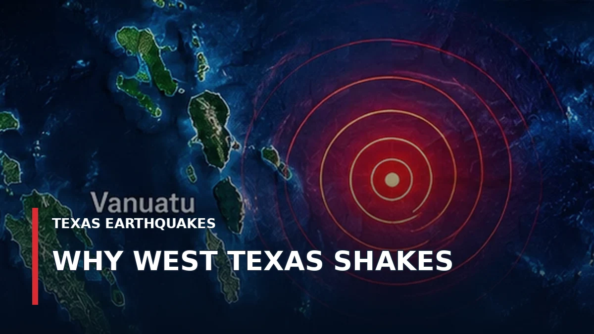

BREWSTER COUNTY · October 27, 2026
Magnitude 3.0 Earthquake Reported South of Terlingua on October 26
A magnitude 3.0 earthquake was recorded about 44 kilometers south-southwest of Terlingua on October 26 at 20:47 UTC, according to a USGS-sourced event record. The reported depth was approximately 8.2 kilometers.
READ ORIGINAL REPORT →LAVACA COUNTY · October 27, 2026
Magnitude 2.7 Earthquake Recorded West of Hallettsville
A magnitude 2.7 earthquake occurred roughly eight kilometers west of Hallettsville on October 25 at 19:54 UTC, according to a USGS event summary. Its depth was reported near three kilometers.
READ ORIGINAL REPORT →DIMMIT COUNTY · October 27, 2026
October 17 Earthquake Near Carrizo Springs Measured Magnitude 3.5
USGS data show a magnitude 3.5 earthquake on October 17, about 24 kilometers west-northwest of Carrizo Springs. The listed depth was about six kilometers.
READ ORIGINAL REPORT →